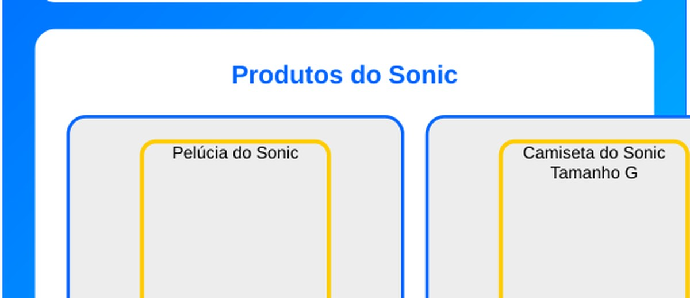
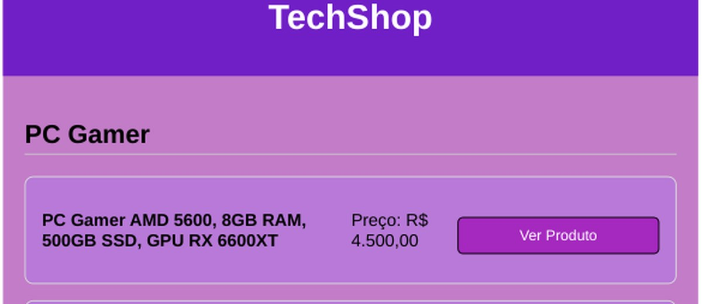

HTML
Estrutura de páginas web
Olá, eu sou Luiz Gustavo
Gosto de tecnologia, programação e hardware. Estou sempre aprendendo e criando projetos para evoluir e me preparar para o mercado de trabalho.
01const objetivo = "aprender";
02while (continuar) {
03 estudar();
04 criarProjeto();
05}
06// sempre evoluindo
01 / SOBRE MIM
Um pouco sobre minha trajetória e o que estou desenvolvendo.
Estou no primeiro ano de Engenharia de Software na UNINGÁ, indo para o segundo, e venho desenvolvendo meus conhecimentos em programação, banco de dados e desenvolvimento web. Tenho bastante contato com C, MySQL, HTML e outras tecnologias.
Também gosto bastante da parte física da computação, principalmente hardware de PCs. Acredito que a inteligência artificial vai ter um papel cada vez maior na tecnologia, mas como uma ferramenta de apoio para as pessoas, não como substituta. Por isso, procuro fazer cursos, aprender novas linguagens e continuar estudando para me destacar no mercado de trabalho.
Em trabalhos em grupo, costumo colaborar com a equipe e muitas vezes tomo a iniciativa de organizar as tarefas e ajudar a conduzir o trabalho.
02 / HABILIDADES
Uma visão geral das ferramentas que já utilizei ou estou aprendendo.
Estrutura de páginas web
Estilo e layout de sites
Interatividade e lógica web
Lógica e programação
Consultas e banco de dados
Versionamento e repositórios
As habilidades representam tecnologias que já utilizei ou estou estudando, não necessariamente domínio profissional.
03 / PROJETOS
Clique em um projeto para abrir uma prévia interativa aqui mesmo no portfólio.

01Loja temática com produtos do Sonic e formulário que utiliza a API ViaCEP para consulta de endereço.

02Uma página de loja de tecnologia com categorias de produtos, imagens e informações de preço.
Mais projetos em breve
Esta seção pode crescer conforme você desenvolver novos trabalhos.
04 / CONTATO
Veja meus repositórios e acompanhe os projetos que estou desenvolvendo.
⌘ Acessar meu GitHub ↗